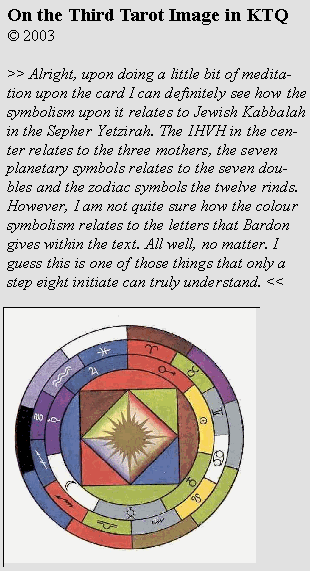

;-) I doesn't take a Step 8'er to realize that there's absolutely no relationship between these colors and the colors of the Letters (Fire pole) given in KTQ.
Sorry to have been so uninformative in my first reply, but mainly I wanted to prompt you into meditating on the symbol first. Now that you have, here's a bit more to meditate about. ;-)
#1) The "circles" are actually wheels. I suggest that you print out 4 copies. One copy, leave as is. The second copy, cut out the wheel of the zodiac. The third copy, cut out the wheel of the planets. And the fourth copy, cut out the central circle. Now layer the wheels and connect them together at their center points so that you can rotate the various wheels in relation to each other.
#2) The outer wheel represents the Akashic essential meaning or "legality" (Earth pole) as expressed through the 10 Sephirot and the numbers 1 thru 10. The zodiacal wheel represents those Letters that have a special affinity for the mental realm. The planetary wheel represents those Letters that have a special affinity for the astral realm (the "seven portals to the soul"). The inner square of the Elements represents the physical realm.
#3) The reason Bardon said that this glyph especially represents the Four-Letter Key is because it shows affinities, *through its color symbolism*, between the four realms into which one will place the four Letters.
This is difficult to explain with typed words! If we were talking face-to-face, it wouldn't be a problem, but I'll give it a try anyway and see what comes of it.
The place one starts is with the legality (i.e., the essential meaning) of the physical effect one wishes to create. The Letter which corresponds with that legality is placed in the Akasha. Thus you find the appropriate Sephirot key on the outer wheel and turn it so that it's at top. This represents the Letter you will place into the Akasha.
To then find the most harmonious combination of Letters to put into the mental, astral and physical realms, you turn the inner wheels so that the colors match with the color of your legality. Of course, this assumes that you know all of the aspects of each Letter VERY thoroughly, because it's not always a straight-forward and logical process. It's an Art, so to speak.
Nonetheless, if you take the three charts I present in my "Commentary Upon KTQ" and start fiddling around with your wheel, you'll either get it or drive yourself insane. ;-)
This wheel is VERY versatile. You can really start anywhere (i.e., with any realm) and dial up harmonious solutions to the other realms. For example, if you desire a specific astral effect, you would start there and then tune in your legality, then figure out your most harmonious mental Letter, etc.
If you're working with just the single-Letter key, then from this glyph you can get an idea of it's ultimate mental, astral and physical effectiveness by way of harmonious color symbolism.
This wheel will also reveal certain conflicts and affinities between the Letters.
But again, this only begins to *really* work when you know the Letters inside and out. Up until that point, it can be a painstaking process to make much sense of it, let alone any actual use of it.
My best to you,
:) Rawn Clark
19 Jun 2003
>>Also, within the inner circle of the Third Key I'm seeing three sets of four different colours. So in the inner circle we've got the three mother letters, the five vowel points...so what do the other four come in? <<
I think you're being overly rational here. :)
The first set of four, immediately within the inner circle, represents the four Divine Qualities, as expressed through the four Elements and their respective Electro-Magnetic properties.
The first *square* represents, as Bardon explained, the material realm and the four material Elements.
The innermost square represents the Kabbalist. Note that the sequence of colors (moving counter-clockwise) follows the proper correspondences to the IHVH -- Yod=Fire, Heh=Water, Vav=Air and Heh-final=Earth. I take this as evidence that Bardon did understand the Hebrew correspondences to the IHVH as opposed to what he stated in the text of KTQ (which was that Yod=Fire, Heh=Air, Vav=Water and Heh-final=Earth, which is patently incorrect).
The 24-pointed star at the center represents Divine Providence acting through the Kabbalist.
My best to you,
:) Rawn Clark
23 Jun 2003
>>Now, if the planets are associated with the sepheroth, what of the planetary associations of the double letters? From which seems to flow that the letters are in turn associated with the sepheroth. <<
No. The 7 planets and the 7 Double Letters can be considered one and the same, but the planets and the Sephirot cannot. The 22 Letters and the 10 Sephirot are separate things and only together do they constitute the 32 Paths.
This need to make the Double Letters equate directly to the Sephirot is a common failing of the Western intellect.
>> Using the third key, some of the letters seem to match up: Venus(Peh) and Mars(Daleth) in particular. Though the others are up in the air for me. Or am I making the old "Socrates is a duck error" of Plato all over again? <<
The three in question are Moon, Sun and Saturn. The Sun's color is a Yellow Gold; whereas, Tiphareth is presented as Gold. Saturn is presented as a deep Purple, as is Yesod. However, Saturn corresponds to Binah/Black, not Yesod/Purple. The Moon is given as white which infers a connection with Kether! ;-) However, Moon corresponds to Yesod and the color Purple. I'm not sure why Bardon chose the Moon's whiteness instead of its traditional color of purple or silver (perhaps because he's used silver for Mercury instead of its usual orange).
>>This clears so much up. The sepheroth are numbered counter clockwise from Kether to Malkuth in numerical order, correct? <<
Yes, that's correct. It's interesting to note that the Sephirotic wheel follows a counter-clockwise (1-10) sequence; the zodiacal wheel a clockwise sequence (Aries -Pisces); and the planetary wheel a counter-clockwise sequence (Moon-Saturn).
My best to you,
:) Rawn Clark
25 Jun 2003